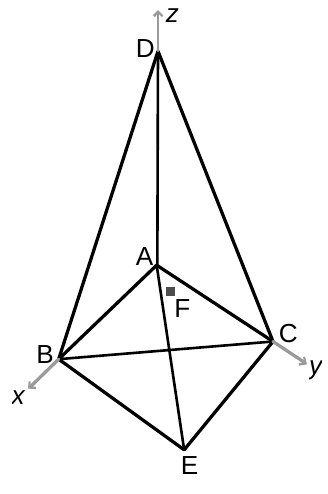
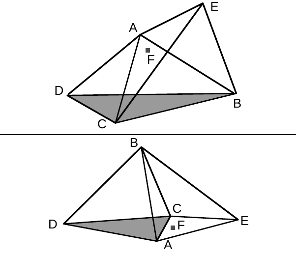

34th ICPC World Finals · Problem K
Your company makes artistic paperweights. Each paperweight is the union of two tetrahedra that share one face. They are clear solid glass with embedded colored flecks. One of the little flecks in each paperweight is actually a tiny RFID chip. This chip must be placed close to a partnered computer in order for that computer to operate. Typically this is accomplished by placing the paperweight on top of the computer. The chip has a limited range, however, so its distance from the flat computer top is significant. Therefore, it is important to calculate the minimum and maximum possible distances from the chip to the computer top when the paperweight is in a sufficiently stable position. A position is considered sufficiently stable if the paperweight would not move if the center of mass were somehow shifted up to 0.2 units in any direction. You may assume the paperweight has uniform density, and that the chip is small enough to be considered a point.


As an example, consider a paperweight with the vertices of the common face at A = (0, 0, 0), B = (9, 0, 0), C = (0, 8, 0), the fourth vertex of one tetrahedron at D = (0, 0, 9), the fourth vertex of the other tetrahedron at E = (1, 1, -8), and the chip at F = (1, 2, -1). (See Figure 10, where the chip is shown as a red dot.) Placing the paperweight with face BCD on the computer results in the maximum distance of approximately 3.7 (upper part of Figure 11). Placing the paperweight with face ACD on the computer results in the minimum distance of 1.0 (lower part of Figure 11). Placing the paperweight with face ACE on the computer results in a distance of only 0.9 but is not sufficiently stable.
The input contains one or more test cases. Each test case is a single line describing the six points A, B, C, D, E, and F, in that order. Each point is in turn described by three integers x, y and z giving its coordinates. Both of the two tetrahedra have positive volume, D and E lie on opposite sides of the plane defined by the points A, B, C, and point F lies strictly inside the paperweight. Each coordinate is bounded by 1000 in absolute value. It is always possible to put the paperweight in at least one sufficiently stable position.
The input is terminated by a line containing only the integer 0.
For each test case, display the case number followed by the minimum and maximum distances from the chip to the base plane when the paperweight is sufficiently stable. These numbers should be rounded and displayed to five digits after the decimal point. Follow the format of the sample output.
0 0 0 9 0 0 0 8 0 0 0 9 1 1 -8 1 2 -1 0 0 0 7 0 0 0 7 0 0 0 7 -1 -2 -3 2 2 2 1 2 3 6 2 3 -2 6 3 -1 0 7 4 1 -2 -1 5 3 0
Case 1: 1.00000 3.73526 Case 2: 0.57735 2.66967 Case 3: 0.28214 5.00871